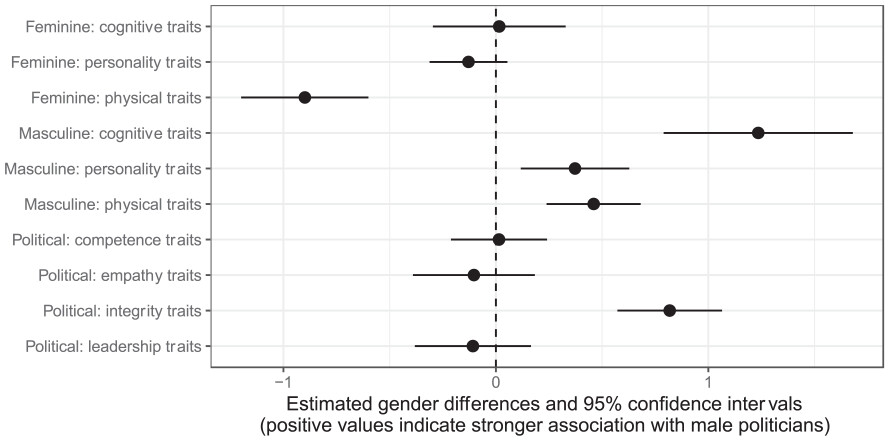

# Load data
library(tidyverse)
url <- "https://raw.githubusercontent.com/vanatteveldt/ecosent/master/data/intermediate/sentences_ml.csv"
d <- read_csv(url) |>
select(id, text = headline, lemmata, sentiment=value) |>
mutate(sentiment = factor(sentiment, levels = c(-1, 0, 1),
labels = c("negative", "neutral", "positive")))
head(d)Word Embeddings, Transformers, and Large Language Models
Week 4: Bert, GPT, and Co
Text Classification Pipeline

Machine Learning (1990-2010)

Rember: The initial problem of text analysis
Computers don’t read text, they only can deal with numbers
For this reason, so far, we tokenized our texts (e.g., in words) and summarized their frequency across texts to create a document-feature matrix within the bag-of-words model

Such a text representation has some issues:
- Treats words as equally important (→ requires removal of noise, stopwords…)
- Ignores word order and context
- Results in a sparse matrix (→ computationally expensive)
Alternative: Map words into a vector space

Text classification with Word-Embeddings

Doing analysis with word-embedding themselves
Based on vector-based computations, we can also analyse semantic relationships
This is a quite common approach by now in research on gender and other types of stereotypes

Source: https://developers.google.com
Results


All three masculine traits were more strongly associated with male politicians.
In contrast, only the feminine physical traits were more strongly associated with female politicians.
Differences remained stable across time.
The Rise of Transformers and Transfer Learning
OVerview of the architecture
The figure on the right represent an abstract overview of a transformer’s architecture
It can be used for sequence-to-sequence predictions
- classic example is translation: e.g., english-to-dutch
- but also: question-to-answer, text-to-summary, sentence-to-next-sentence…
Although models can differ, they generally include:
- An encoder-decoder framework
- Word embeddings + positional embedding
- Attention and self-attention modules
We won’t cover any of these in much detail and just aim for a high-level understanding
Vaswani et al. 2017

Basic Encoder-Decoder Framework (for Translation)

Stacked Encoders and Decoders

Inside of an encoder and a decoder
The word, position, and time signal embeddings are passed to the first encoder
Here, they flow through a self-attention layer, which further refines the encoding by “looking at other words” as it encodes a specific word
The outputs of the self-attention layer are fed to a feed-forward neural network.
The decoder likewise has both layers as well, but also an extra attention layer that helps to focus on different parts of the input (e.g., the encoders outputs)

Source: Alammar, 2018
Self-Attention
In general terms, self-attention works encodes how similar each word is to all the words in the sentence, including itself.
Once the similarities are calculated, they are used to determine how the transformers encodes each word.

High-level process
The transformers starts by creating word embeddings (combinations of similarity, position, time signal)
The encoder start by processing the input sequence (embeddings).
The output of the top encoder is then transformed into a set of attention vectors which are used by each decoder in its “encoder-decoder attention” layer which helps the decoder focus on appropriate places in the input sequence
The decoder spits out a first output (e.g., the word “I”), which then becomes the input for the decoder in follow-up steps
The decoder repeats these steps until a special symbol (e.g.,
= “end of sentence”) is reached.

Text Classification Pipeline Using Transformers

Large Language Models: BERT, GPT and the “AI Revolution”?

Source: Christian Behler on Medium
Next token prediction (as in GPT-2)

Next token prediction

Bert
Bidirectional Encoder Representations from Transformers (BERT) is a family of language models introduced in October 2018 by researchers at Google.
BERT is an “encoder-only” transformer architecture.
Generally speaking, BERT consists of three modules:
- Embedding. This module converts an array of one-hot encoded tokens into an array of vectors representing the tokens.
- Stack of encoders. These encoders are the Transformer encoders (BERT-base = 12, BERT-large = 24). They perform transformations over the array of representation vectors.
- Un-embedding. This module converts the final representation vectors into one-hot encoded tokens again.
Devlin et al. 2018

GPT-Series by OpenAI
Generative Pre-trained Transformer (GPT), is a set of state-of-the-art large language model developed by OpenAI.
Particularly GPT-3, released publicly in November 2022 together with a chat interface, caused a lot of public attention.
Millions of users in a very short amount of time (faster than Facebook, Instagram, TikTok, etc…), now 1.5 Billion users

High-level architecture and training of GPT
- GPT are decoder-only models

Source: Wikipedia
Zero-Shot Text Classification with LLMS

Examples in the literature
Baluff et al. (2023) investigated a recent case of media capture, a mutually corrupting relationship between political actors and media organizations.
This case involves former Austrian chancellor who allegedly colluded with a tabloid newspaper to receive better news coverage in exchange for increased ad placements by government institutions.
They implemented automated content analysis (using BERT) of political news articles from six prominent Austrian news outlets spanning 2012 to 2021 (n = 188,203) and adopted a difference-in-differences approach to scrutinize political actors’ visibility and favorability in news coverage for patterns indicative of the alleged serious breach of professional political and journalistic norms.

Methods
Used a German-language GottBERT model (Scheible et al., 2020) that they further fine-tuned for the task using publicly available data from the AUTNES Manual Content Analysis of the Media Coverage 2017 and 2019 (Galyga et al., 2022; Litvyak et al., 2022c)
Comparatively difficult task, but were able to reach a satisfactory F1-Score of 0.77 (precision = 0.77, recall = 0.77).

Findings
Our findings indicate a substantial increase in the news coverage of the former Austrian chancellor within the news outlet that is alleged to have received bribes.
In contrast, several other political actors did not experience similar shifts in visibility nor are similar patterns identified in other media outlets.

A Look Back at the Chronology of NLP

Explosion in model size?

Environmental Impact

Conclusion
Advancement in NLP and AI are fast-paced; difficult to keep up
LLMs promise immense potential for communication research
Yet, large language models can contain biases or even hallucinate!
- Validation, validation, validation!


Example Exam Question (Open Format)
What does zero-shot learning refer to in the context of large language models?
In the context of large language models, zero-shot learning refers to the ability of a model to perform a task or make predictions on a set of classes or concepts that it has never seen or been explicitly trained on. Essentially, the model can generalize its knowledge to new, unseen tasks without specific examples or training data for those tasks.
In traditional machine learning, models are typically trained on a specific set of classes, and their performance is evaluated on the same set of classes during testing. Zero-shot learning extends this capability by allowing the model to handle tasks or categories that were not part of its training set.
In the case of large language models like GPT-3, which is trained on a diverse range of internet text, zero-shot learning means the model can understand and generate relevant responses for queries or prompts related to concepts it hasn’t been explicitly trained on. This is achieved through the model’s ability to capture and generalize information from the vast and varied data it has been exposed to during training.